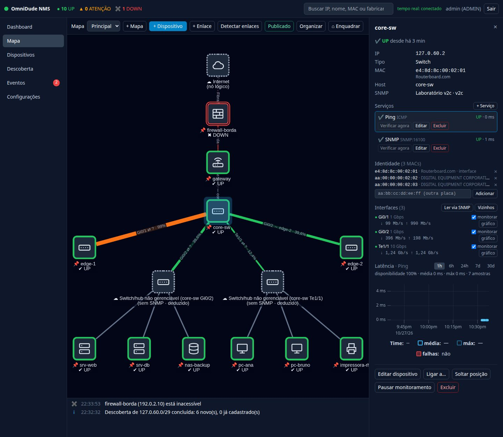

O problema#
Numa rede com DHCP, o IP de um notebook, de uma câmera ou de um ponto de acesso pode mudar. Se o IP fosse a identidade, a troca apareceria como uma queda e um host “novo”, e o histórico seria perdido.
No OmniDude o IP é só um atributo que muda. A identidade vem dos MACs conhecidos de cada dispositivo. Se o dispositivo cai e o MAC dele aparece em outro IP, o OmniDude atualiza o endereço e tudo continua: checagens, enlaces, posição no mapa e gráficos.
De onde vêm os MACs#
Eles são aprendidos sozinhos:
- do cadastro e da descoberta;
- do ARP enquanto o dispositivo responde;
- de todas as interfaces, nos equipamentos SNMP (Ler via SNMP).
No inspetor, a seção Identidade mostra os MACs (com o fabricante e a origem) e os IPs anteriores. Dá para adicionar outro à mão (a placa Wi-Fi de um notebook, por exemplo) e remover. Um MAC pertence a um dispositivo só.


O que acontece a cada minuto#
O OmniDude compara o ARP do servidor (e, a cada 10 minutos, o dos roteadores e firewalls SNMP) com o inventário:
| Situação | Resultado |
|---|---|
| Dispositivo DOWN, e o MAC dele aparece em outro IP que ninguém usa | O IP é atualizado sozinho, com histórico, e um evento informa. Checagens, enlaces, posição e gráficos continuam os mesmos. |
| O MAC responde nos dois IPs | O novo vira endereço adicional (equipamento com duas interfaces). |
| Dispositivo ainda UP no IP antigo | Nada: espera (o ARP antigo pode só estar velho). |
| O IP de um dispositivo é visto com outro MAC | Aviso (uma vez): outra máquina pode ter assumido o endereço, e o dispositivo pode estar “UP” por engano. Se você trocou a placa, adicione o MAC novo no inspetor. |
| MAC aleatório (celular com endereço privado), de VM, ou de mais de um dispositivo | Nunca decide sozinho. |
A atualização automática só acontece com o dispositivo DOWN. Em Ajustes → Identidade (DHCP) você pode desligá-la (o sistema passa a só avisar) e mudar o intervalo de leitura do ARP dos roteadores.
Achar um IP que ninguém contatou#
A tabela ARP só tem hosts com quem o servidor falou recentemente. Quando há dispositivos DOWN com MAC estável, o OmniDude faz o kernel resolver o ARP da sub-rede deles: envia um byte UDP para a porta 9 de cada endereço, sem privilégio e sem esperar resposta. Isso acontece no máximo a cada 5 minutos por sub-rede, e só para sub-redes em que o servidor tem interface, privadas e de até 1.024 endereços.
Procurar novo IP (inspetor de um dispositivo DOWN) faz essa busca na hora.
Na descoberta#
Um host que tem o MAC (ou, como sugestão, o nome) de um dispositivo cadastrado com outro IP aparece como “Parece ser X (cadastrado com Y)”, com o botão Atualizar IP. Importá-lo como novo exige marcar essa opção de propósito. Veja Descoberta.
Limites e recomendações#
- Sem ARP não há identidade nova. Dispositivos atrás de um roteador sem SNMP, em outra rede, não são reconhecidos.
- Celulares com MAC aleatório só entram por sugestão de nome.
- A melhor fonte seria o servidor DHCP (concessões e reservas), que o OmniDude ainda não lê.
Para o que importa (servidores, switches, impressoras, câmeras), reserve o IP no DHCP. A identificação por MAC é a rede de segurança, não um substituto para reservas.